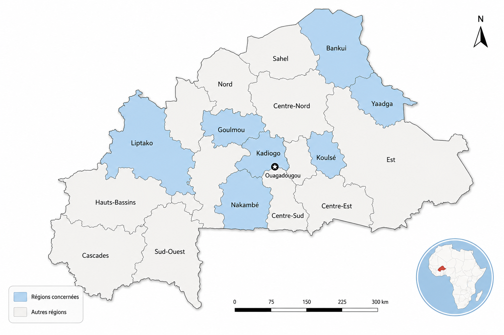

Régions couvertes par l’étude
L’analyse couvre sept régions : Bankui, Goulmou, Kadiogo, Koulsé, Liptako, Nakambé et Yaadga.

Cette plateforme présente les résultats d’une analyse conjointe genre conduite dans sept régions du Burkina Faso. Elle met en évidence les besoins différenciés des femmes, hommes, filles et garçons, ainsi que le rôle des organisations, des ODF et des mécanismes humanitaires dans l’intégration du genre.
L’analyse couvre sept régions : Bankui, Goulmou, Kadiogo, Koulsé, Liptako, Nakambé et Yaadga.


La crise humanitaire au Burkina Faso affecte différemment les femmes, les hommes, les filles et les garçons. Les déplacements, l’insécurité, la pression économique et l’accès limité aux services essentiels renforcent les inégalités existantes.
Cette analyse vise à éclairer la planification humanitaire, la priorisation des interventions, la redevabilité envers les populations affectées et l’intégration transversale du genre dans la réponse.
Appui à la coordination humanitaire, à l’intégration du genre et à la valorisation des résultats.
Appui technique à l’analyse genre, à la structuration des résultats et aux recommandations stratégiques.
Contribution à la collecte, à l’analyse, à la consolidation et à la documentation des résultats.
Participation aux consultations et à l’identification des priorités sectorielles et intersectorielles.